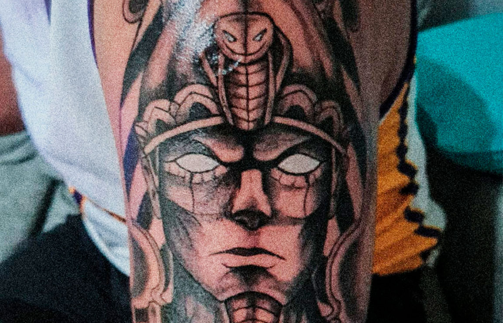
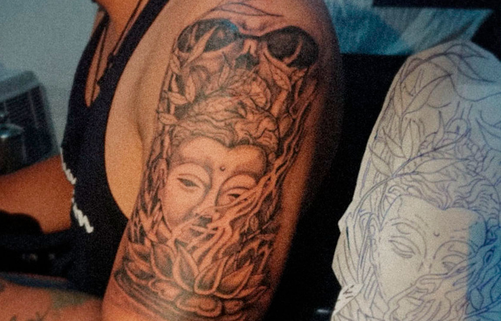
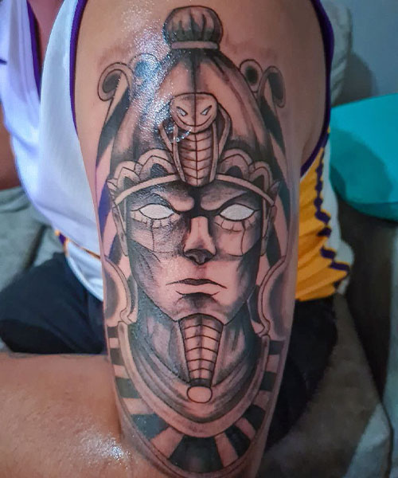
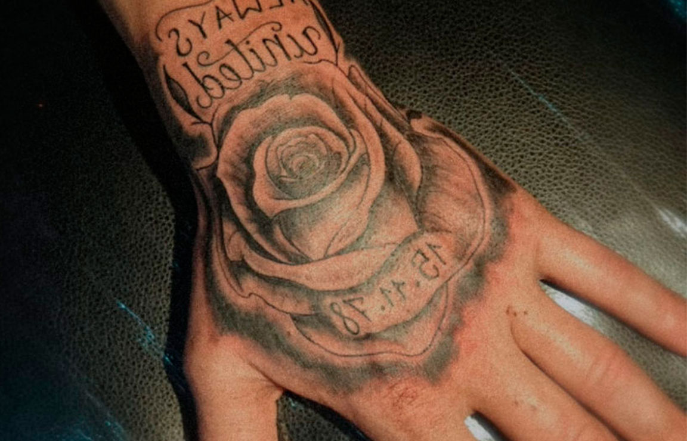
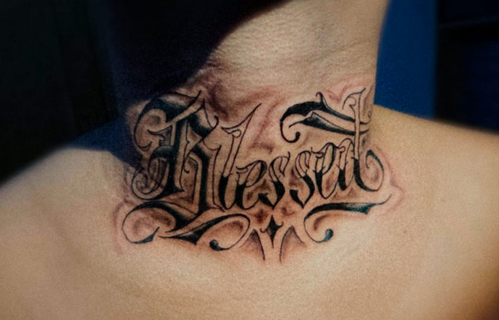

𝔐𝔯.𝔦𝔫𝔎𝔰𝔱
𝔐𝔯.𝔦𝔫𝔎𝔰𝔱
𝔐𝔯.𝔦𝔫𝔎𝔰𝔱
𝕰𝖑 𝕿𝖆𝖙𝖚𝖆𝖉𝖔𝖗 𝕯𝖊𝖑 𝕭𝖆𝖗𝖗𝖎𝖔.
Hace más de veinte años que me inicié como artista del tatuaje. Hice mi primer tattoo a mediados de los noventa en el centro de América, con una máquina casera fabricada con un boli Bic como grip, un motor de grabadora y una aguja de cuerda de guitarra. Desde entonces no he dejado de formarme.
Siempre me he enfocado en un constante aprendizaje para poder corresponder a la historia de de cada cliente con la entrega, el sentimiento y el respeto que merece, desde aquel que solo se quiere tatuar un punto hasta el que opta por una pieza grande.
Pongo todo mi empeño en demostrar que se pueden hacer tatuajes de la mejor calidad adaptados a todos los bolsillos dejando de lado la parafernalia y la ostentación que se asocia a los estudios de tattoo / al mundo del tatuaje. Me ciño a lo que verdaderamente importa: trato profesional y cercano y extremado cuidado de la higiene.
𝕰𝖑 𝖆𝖗𝖙𝖊 𝖉𝖊𝖑 𝖇𝖆𝖗𝖗𝖎𝖔
Y para el barrio.
-

-

-

-

-

El infinito en un junco
No solo el tiempo escribe en la piel. Algunas personas se hace tatuar frases y dibujos para adornarse como pergaminos iluminados. Nunca lo he hecho y, sin embargo, comprendo esa pulsión por dejar huella, colorear y convertir en texto el propio cuerpo. Recuerdo las semanas extasiadas que viví con una amiga adolescente cuando ella decidió hacerse su primer tatuaje. Levantó delante de mí la gasa que lo cubría. Miré fijamente las letras todavía tiernas y la carne enrojecida del brazo; cuando el músculo se tensaba, las palabras parecían temblar con un sutil movimiento propio. Me sentí fascinada por aquella frase capaz de palpitar, de sudar, de sangrar (un libro vivo). [...] Creo que el tatuaje es una supervivencia del pensamiento mágico, el rastro de una fe ancestral en el aura de las palabras.
Irene Vallejo
𝕬𝖗𝖙𝖎𝖘𝖙𝖆 𝖉𝖊𝖑 𝖙𝖆𝖙𝖚𝖆𝖏𝖊
Un servicio profesional y atento.
Mi intención es brindar el mejor producto a un precio razonable, adaptado a todos los bolsillos, de una manera limpia, estéril y profesional, sin perder su esencia y trasfondo.
Soy un artista con una trayectoria probada. He trabajado en muchos amantes de los tatuajes en España y Latinoamérica, lo que me ha llevado a exponer mi trabajo en galerías importantes. Utilizo la técnica más moderna y estéril con productos de la mejor calidad para todo tipo de tatuajes, tipos de piel y presupuestos.
Pero no solo eso, he trabajado mucho para ofrecer una atención integral al cliente y que todo el que viene a mi pequeño estudio sea atendido con profesionalismo, ya que no creo que esto sea un capricho, sino un cambio de look de por vida.
¡Mandanos tu idea
Whatsapp!
Whatsapp!